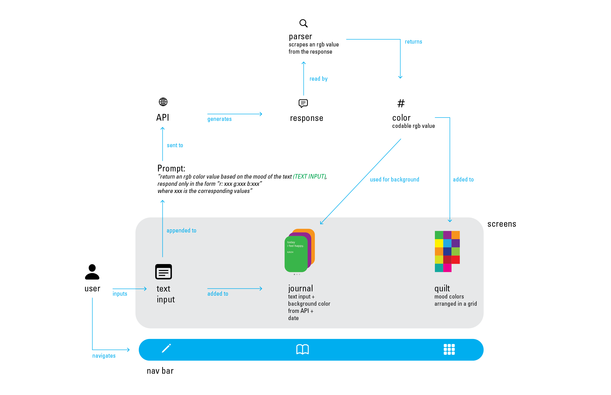

The initial diagram for myQuilt:
At first, the concept was to have three tabs, navigatble by a tab bar at the bottom: a journal view, with swipable pages, a grid view, that would later become the quilt, and a text entry view.
The first version had a skeumorphic UI
The original version of the UI was skeumorphic, made to resemble a leatherbound journal with rough paper.

In order to simplify the UI, the text entry page was replaced with a tray that slid up from the bottom.

I dropped the skeumorphic design in favor of a simple UI that emphasized the entries' colors. Also I updated the quilt view to be more pleasant and include the date and time of the entry.
I dropped the skeumorphic design in favor of a simple UI that emphasized the entries' colors. Also I updated the quilt view to be more pleasant and include the date and time of the entry.
I dropped the skeumorphic design in favor of a simple UI that emphasized the entries' colors. Also I updated the quilt view to be more pleasant and include the date and time of the entry.


The final version of the app does away with the tab bar navigation. The grid cells in the quilt are now tapable, allowing the user to access the journal view, which keeps its swipable functionality. Additionally, AI image generation is now included to further sell the quilt theme. A prompt is generated from the entry, and is piped over to Dalle to generate the image.